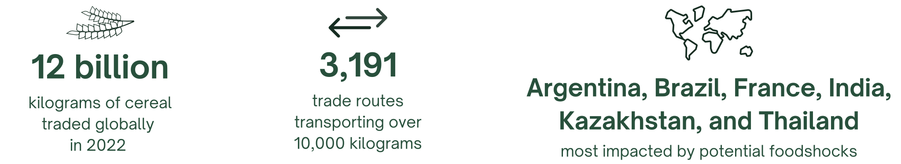
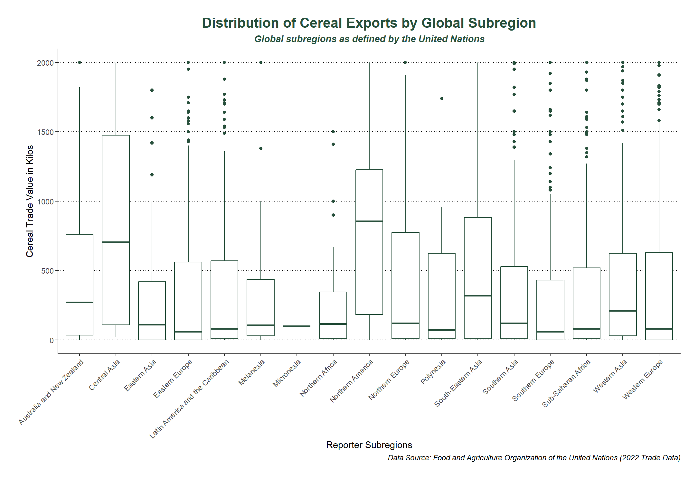

Common causes of global-scale food shocks are as follows: political instability and violence, crop and livestock destruction, the global climate crisis, economic stress, and forced displacement (Hasegawa et al., 2021, pp. 587-589; World Food Programme, 2023). To simplify calculations, this project took all causes into consideration and defined food shocks as a decrease in food production for any reason.
Another way to visualize the global cereal trade is by aggregating the data to the United Nation's defined subregions, rather than parsing through each individual country. The chart below outlines the descriptive statistics for the cereal trade of each global subregion.
